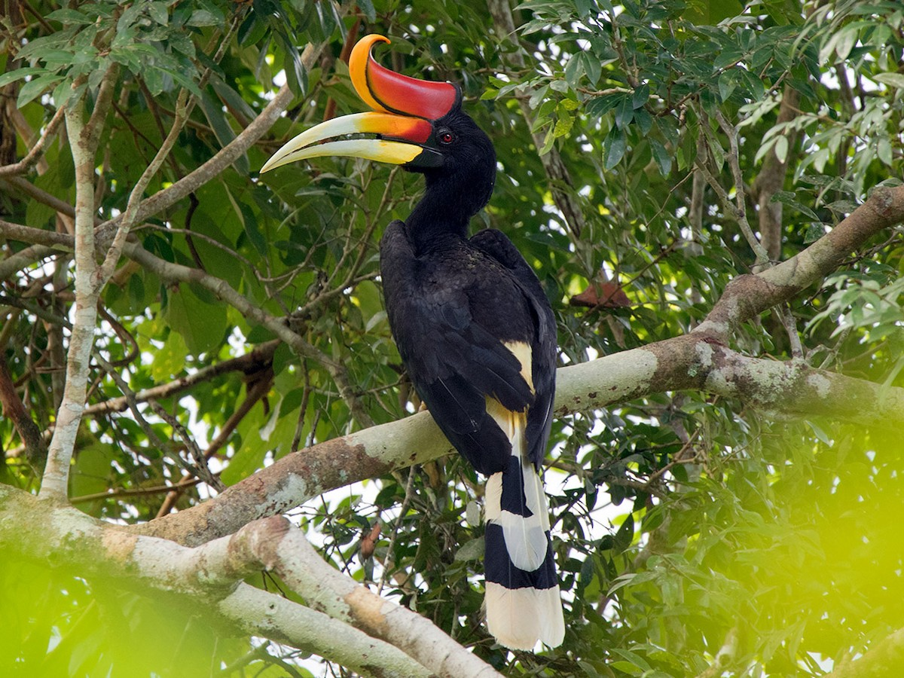
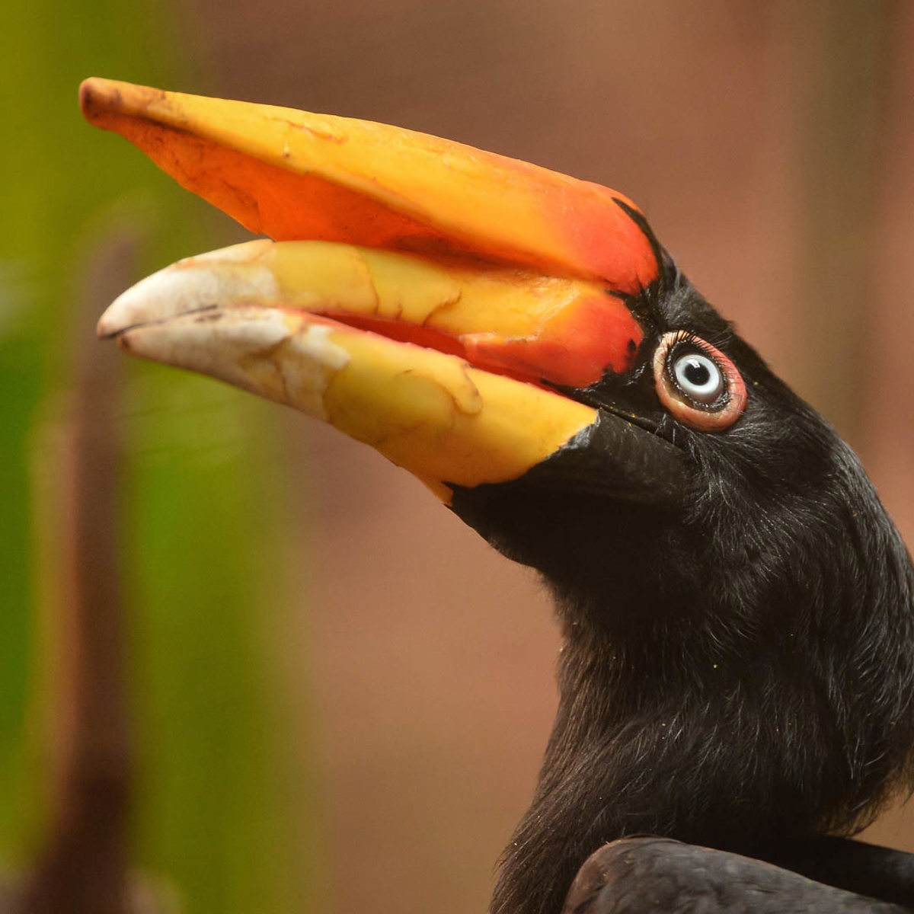
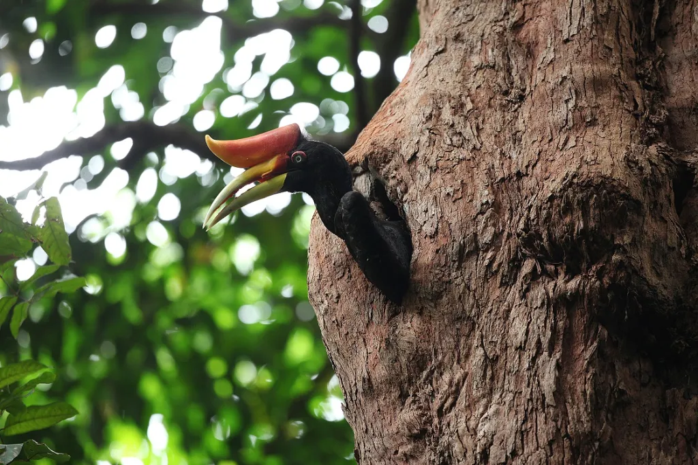
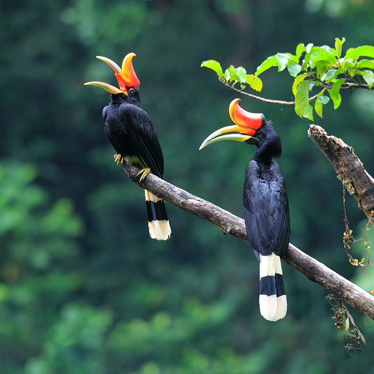

A giant of Southeast Asia
Rhinoceros Hornbill
Buceros rhinoceros
The rhinoceros hornbill (Buceros rhinoceros) is a large species of forest hornbill. In captivity, it can live for up to 35 years. It is found in lowland and montane, tropical and subtropical climates and in mountain rain forests up to 1,400 meters in the Malay Peninsula from southern Thailand; and the islands of Singapore, Borneo, Sumatra and Java.
not toucans
The Casque
The rhinoceros hornbill takes its name from the large, upturned casque on top of its bill. The casque and the bill are orange-red, a color the bird adds itself by rubbing oil onto its feathers from a gland above its tail.
- 80–90 cmLength
- 2–3 kgWeight
- 35 yearsIn captivity

Males have red eyes while females have white eyes.
How it lives
Sealed Nest
The rhinoceros hornbill nests in tree cavities, and raising a family means a long stay indoors for the female.
- The female stays in the cavity with her eggs. The entrance is sealed with mud, food and feces, leaving a small opening.
- The male brings her food through the opening, and later feeds the chicks too.
- When the chicks are fully feathered, the parents chip away the mud to let them out.

A female hornbill peeking out of her nest.
Why it matters
At Risk
The rhinoceros hornbill is listed as Vulnerable on the IUCN Red List, moved up from Near Threatened in 2018. It is also the state bird of Sarawak, in Malaysian Borneo.
-
Habitat loss
Rainforest is cleared, including the large trees the birds need for nesting.
-
Hunting
Taken for meat, skulls and feathers.
-
Mistaken identity
Poachers hunting the helmeted hornbill sometimes shoot this bird instead.

VulnerableIUCN Red List